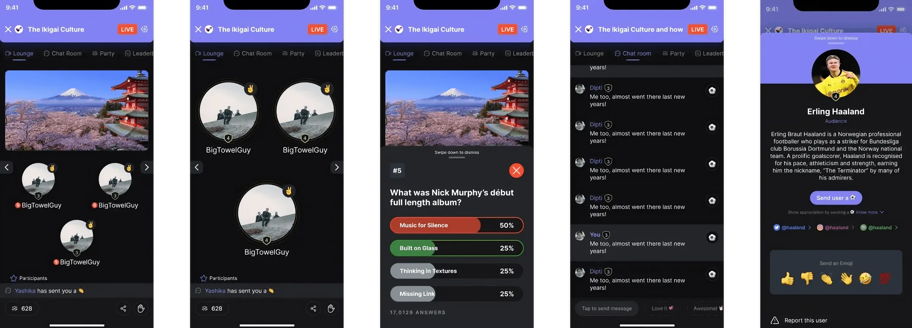
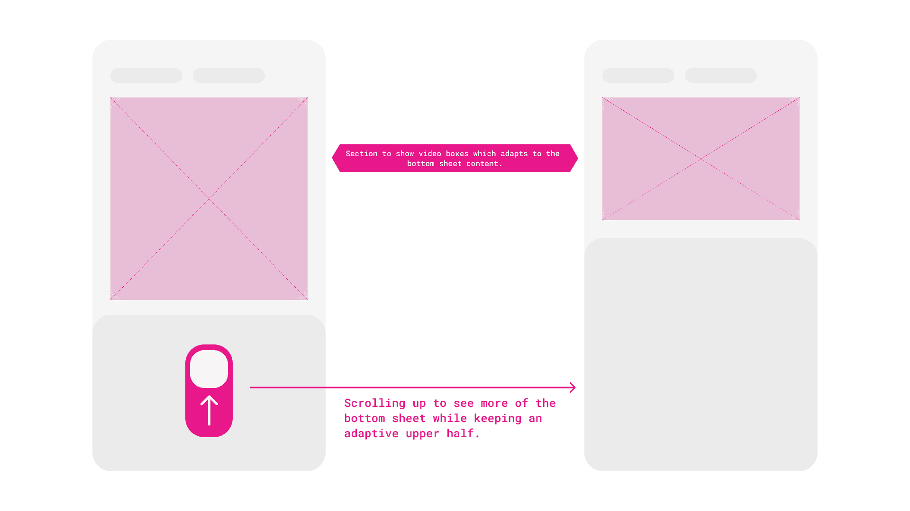
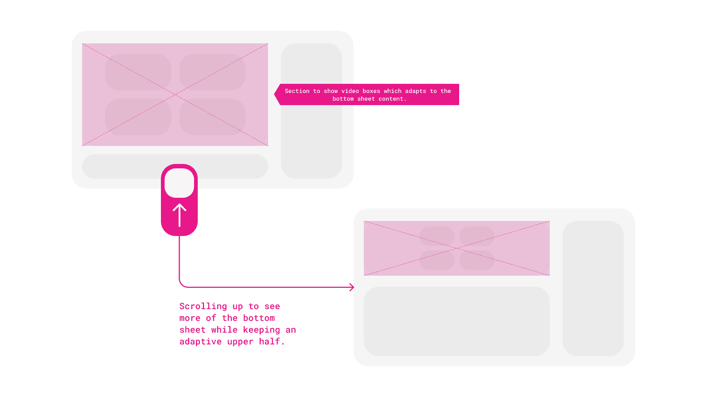
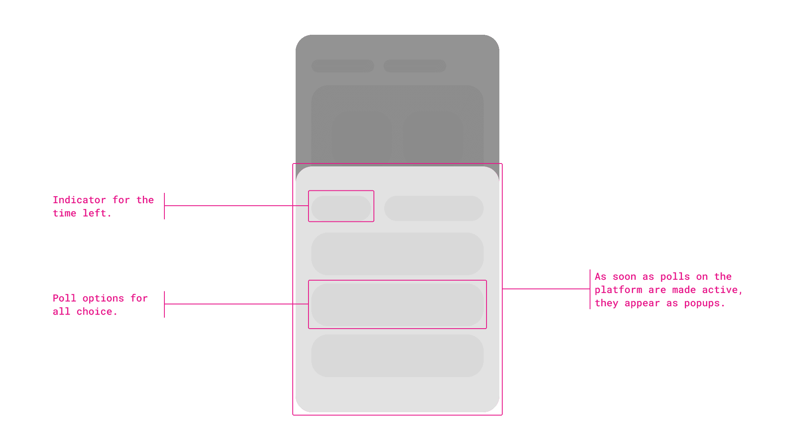
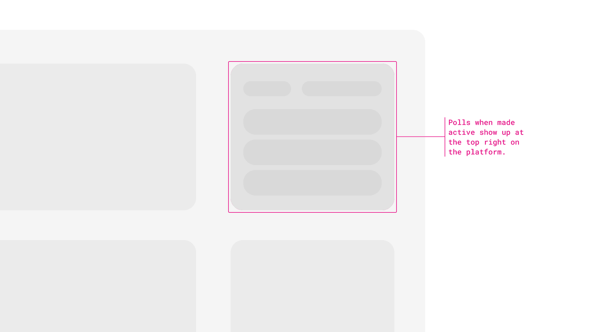

← Case Studies(02 / 14)

Insider Vibes
0 to 50,000 paying users in one month
Design Systems0→1A/B TestingResearchUX Design
Not everyone like's to read to much nowadays (thanks TikTok). See a comic strip?
TimelineJune 2020 - July 2021
RoleLead Designer & Design System Manager
ToolsFigma · After Effects · Protopie · Rive · CleverTap
paying users in month one50,000+
Return rate achieved62%
Design system from scratch1

The Problem
Insider's entire business was offline events. Ticketing, in-person shows, the kind of thing that requires people to be in the same room. Then COVID happened, and the business that had built the company disappeared in about three weeks.
We had six months of runway and no product. Not a slow decline we could plan around, a business model that stopped existing overnight. The mandate was simple to say and hard to do: build something people would pay for, fast, with no idea yet what that something was.
Research
1
I looked at Clubhouse and Google Meet, not because they were perfect comparisons, but because between them they covered the two things I thought we needed: the intimacy of audio-first rooms and the structure of scheduled, hosted sessions. I broke the comparison into five pieces: audio versus video, exclusivity, community building, moderation, and monetization.
2
Then user interviews on how people actually attend events, and what changes about that expectation when the event is online. Before any screens, we mapped a value stream . What the product needed to do, and specifically what a user was accomplishing when they came back a second time. I took that to the business and we argued until the design value stream and the business needs actually lined up.
- Research
Competitive teardown
Clubhouse and Google Meet — each solved half of it
ClubhouseGoogle MeetAudio-first vs videoLive audio roomsVideo conferencingExclusivityInvitation-only launchCorporate/closed useCommunity buildingRooms by shared interestCollaborative meetingsModeration toolsHost-controlled roomsAdmin controlsMonetisationCreator monetisationNone nativeInsider VibesChat, audio and video in one — room-based communities with moderation and experience levels.
- Users
Admin
- Manage moderators
- Same as moderator
Moderator
- Edit other users
- Edit room settings
- Can screenshare
- Same as joinee
Joinee
Participant
- Audio access
- Same as audience
Audience
- View event
- Chat
- UserChatLeaderboardAudio / VideoUser listQuizAdminAll user actionsManage permissionsManage usersManage room detailsCreate quiz
01 / 03
Understanding the users
Most platforms design for the third and bolt on tooling for the first two. We designed all three properly, because a community with weak moderation isn't a community for very long.
Three roles, and they needed genuinely different products inside the same product:
Admin
Create rooms, manage users, oversee content, set rules.
Moderators
Support admins, monitor discussions, de-escalate conflict, report upward.
Participants
Participate, follow rules, build the community, personalise their profile.
The decision
I built the design system plug-and-play from day one, knowing it would slow us down at the start.
DECISION TAKEN
The decision that mattered most wasn't a screen. It was building the design system to be genuinely flexible, plug-and-play down to fonts, colors, and components, when every instinct on a six-month runway says just ship the fastest version and fix it later.
WHAT HAPPENED
That slowed the first few weeks down. It also meant that when engineering rebuilt the entire stack from Angular to React midway through the project, a decision made without me and one I didn't see coming, the interface barely felt it. If I'd built rigid, one-off screens instead of a real system, that migration would have cost us weeks we didn't have.
I also made a smaller call I'd defend again: the poll interaction wasn't the same component reused on every screen. Mobile got a bottom sheet, desktop got a corner box. Small difference, but it meant the feature never felt bolted on to whichever platform wasn't the primary target.
What shipped
Three roles, fully designed
Admins running rooms and setting rules, Moderators keeping sessions on track, Room Joinees showing up to participate. A joining flow that told people upfront what the platform could see and hear from them, camera and mic controls front and center before anyone entered a room, not buried in settings.
Device based design
An information-dense left panel that resized on interaction, giving people more room to scan detail without a second screen or a separate tab. Animated states for live polls, built in Protopie and Rive, appearing as an unobtrusive bottom sheet on mobile and a corner box on desktop.
Design system underneath all of it
Plug-and-play from day one, translated into React components with the dev team so it could scale past the first version without a redesign.

What I still like
The expanding Panel
The bottom half is information-dense and some users want to live in it. Rather than a separate view, the top half shrinks as you scroll so the bottom can breathe. Small thing. Removes a whole navigation step.


01 / 02
Polls
A bottom sheet on mobile, an unobtrusive box in the top-right on desktop. Polls should interrupt you just enough to answer and not enough to lose your place in the conversation.


01 / 02
The result
paying users in month one50,000+
Return rate achieved62%
The first number is the one that kept the company alive. The second number is the one I actually care about. Fifty thousand people trying something new during a crisis tells you the offer worked. Sixty-two percent returning tells you the room itself was worth coming back to, not just the novelty of it.
NOTE FROM FUTURE SAMARTH
I set up CleverTap to A/B test post-launch, and then moved teams before I ever saw the results. I don't know today which version of which screen actually won. That's a real gap in this story, not a humble-brag, an actual loose thread I'd handle differently now: I'd hand off the test with a clear owner and a date to check back, not just switch it on and walk away.
I'd also push back harder, in hindsight, on being kept out of the Angular-to-React decision. It happened to work out because the system was flexible. It could just as easily not have, and I got lucky that the bet I made for a different reason (plug-and-play components) also happened to save us on a problem I didn't see coming.
Next case studies
View all

(04)
MakeMyTrip
Cutting checkout time 72% for 82M monthly travellers
UX DesignResearchConversationMobile
Open